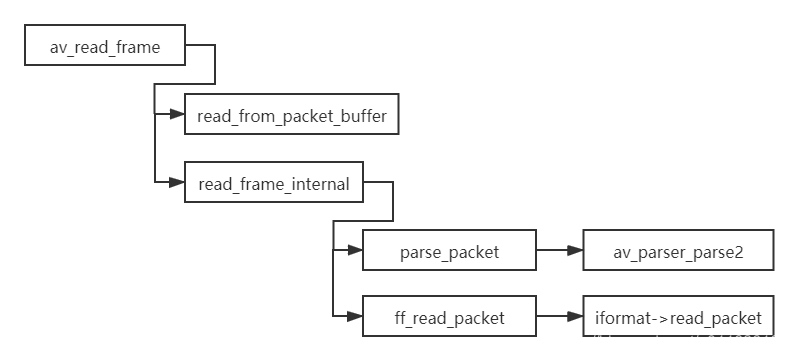

音视频文件是经过编码、封装而成的。那么反过来，要播放音视频文件，首先得解封装、解码。上一篇博客讨论到音视频编码：走进音视频的世界——音视频编码，我们来个上下呼应，本文与大家探讨一下音视频解码。本质上，是按照既定的解码协议去解析编码内容，也就是编码的逆过程。常见的视频解码器有：H264、H265、VP8、VP9、MPEG4、MJPEG、WMV3、MSMPEG4V3，常见的音频解码器有：MP3、AAC、FLAC、AC3、OPUS、VORBIS、AMR、WMA。
视频解码
pts与dts
dts：Decode Timestamp，解码时间戳，决定什么时候解码该帧数据。
pts：Presentation Timestamp，显示时间戳，决定什么时候显示该帧图像。以参考时钟为基准，超前参考时钟则等待，落后（在30ms与500ms之间）参考时钟则快速渲染，十分落后（超过500ms）参考时钟则丢弃该帧。参考时钟分为三种：系统时钟、音频时钟、视频时钟。一般以音频时钟作为参考时钟，因为人类对声音更加敏感，相对图像而言。
关键帧与非关键帧
关键帧：I帧为关键帧，所以I帧可以直接解码还原出一个图像。
非关键帧：P帧与B帧为非关键帧，需要依赖关键帧才能解码。而B帧是双向预测帧，还要另外等待下一个I帧或P帧，才可以成功解码出来。B帧压缩率比较高，但是编解码复杂度也相对高。
组包与拼帧
有些封装格式会把一帧数据拆成若干包，因为关键帧数据可能比较大；RTP封装数据时，也会把一帧拆成若干包，因为MTU规定网络层最大传输单元为1500bytes。因此，在解封装或者接收网络数据包时，需要根据序号排列，把若干个包组成一个完整包，然后再解码。例如FFmpeg读取一帧数据过程，源码在avformat/utils.c中

特定帧头
在解析h264/h265编码的视频帧时，需要在帧头添加起始码，一般起始码为0x00 0x00 0x01或者0x00 0x00 0x00 0x01。比如mp4封装格式，一般是以h264为视频编码、aac为音频编码。
音频解码
planar与packed存储
planar：每个声道数据单独存储。以立体声道为例，L表示左声道，R表示右声道。那么存储格式为LLLLRRRR。在FFmpeg中，第i个声道数据存储在frame->data[i]。类似视频的像素格式YUV420P，Y、U、V三个分量单独存储，4个Y分量对应一个U分量与一个V分量。
packed：所有声道数据交错存储。同样地，以立体声道数据为例。那么存储格式为LRLRLRLR。在FFmpeg中，所有声道数据都存储在frame->data[0]。类似视频的YUV420SP，Y独立存储，UV交错存储，4个Y分量对应一组UV分量。
量化位数
量化位数：量化位是对模拟音频信号的幅度轴数字化，它决定了模拟信号数字化的动态范围。量化位数越大，质量越好。bitsPerSample，占2bytes，一般为8bits、16bits、32bits、64bits。在WAVE的Format chunk有定义，如下表所示：
Format chunk结构
| 域 | 长度 | 内容说明 |
|---|---|---|
| ckID | 4 | Chunk ID: "fmt "，FOURCC四字节码，注意最后一个填充是空格。 |
| cksize | 4 | Chunk size: 16 or 18 or 40 |
| nChannels | 2 | Number of interleaved channels，声道数（交织存储） |
| nSamplesPerSec | 4 | Sampling rate (blocks per second)，音频采样率 |
| nAvgBytesPerSec | 4 | Average bytes rate，音频平均码率 |
| nBlockAlign | 2 | Data block size (bytes)，音频数据块大小（单位字节） |
| wBitsPerSample | 2 | Bits per sample，量化位数（比如8bits、16bits、32bit |
| cbSize | 2 | Size of the extension (0 or 22)，扩展字段长度 |
| wValidBitsPerSample | 2 | Number of valid bits，有效的位长度 |
| dwChannelMask | 4 | Speaker position mask，声道描述掩码 |
| SubFormat | 16 | GUID, including the data format code |
采样率
音频采样率是指录音设备在1秒时间内对声音信号的采样次数，采样频率越高，那么声音的还原越真实自然。常见的采样率有8000Hz、16000Hz、32000Hz、44100Hz、48000Hz。其中44100Hz可达到CD音质标准，也是目前最为常用的采样率。
声道数与声道布局
常见声道数有：单声道、立体声道、3声道、4声道、5声道、6声道、7声道、8声道。其中3声道以上，又称为立体环绕声道，其中杜比音效就是采用多声道同时输出，实现立体环绕效果。
声道布局的各个声道描述如下：
FC: front center
BC: back center
FL/FR: front left/right
FCL/FCR: front center left/right
FTL/FTR: front top left/right
SL/SR: back surround left/right
BL/BR: back left/right
LFE: low frequency effects
声道数与声道布局关系，如下表所示：
声道数与声道布局关系
| 声道数 | 声道布局 | 描述 |
|---|---|---|
| 1 | mono | |
| 2 | stereo | (FL, FR) |
| 3 | 3.0 | |
| 4 | 4.0 | |
| 5 | 5.0 | |
| 6 | 6.0 | |
| 7 | 7.0 | |
| 8 | 8.0 |